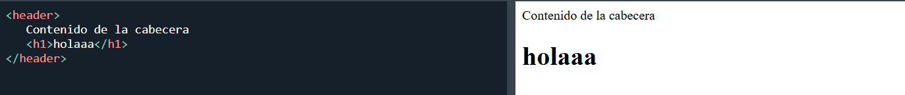
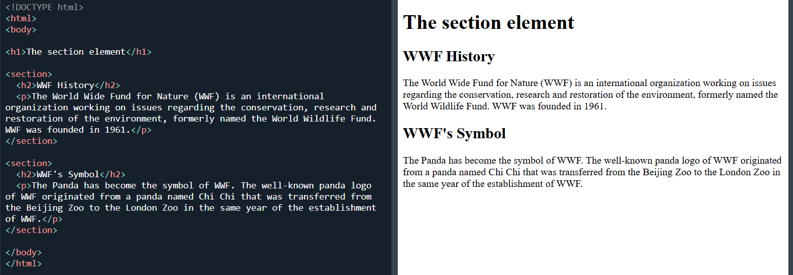
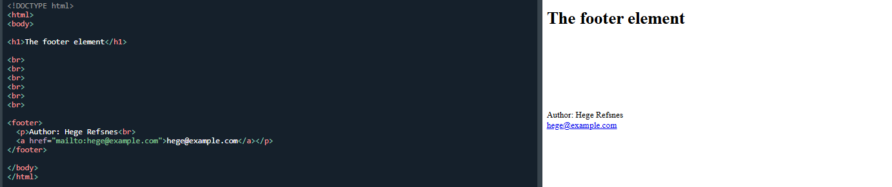

1. Etiquetas Estructurales
Estas etiquetas definen la arquitectura semantica y jerarquia del documento web.
Definicion
La etiqueta header representa la cabecera de una pagina o de una seccion especifica. Suele contener logotipos, titulos de navegacion o formularios de busqueda.
Sintaxis basica / demostracion visual

Uso Adecuado
Se utiliza para introducir el contenido que le sigue o para facilitar la navegacion global del sitio.
- No debe confundirse con la etiqueta head.
- Puede haber varios header en una pagina (uno en el body y otros dentro de section o article).
Definicion
Define una seccion generica y autonoma de contenido dentro del documento, la cual no tiene un contenedor mas especifico que la represente.
Sintaxis basica / demostracion visual

Uso Adecuado
Se emplea para agrupar contenido que comparte una misma tematica, ayudando a los lectores de pantalla a entender la division del sitio.
- Cada seccion deberia incluir, por norma general, un encabezado (h2-h6).
- No usar como un simple contenedor de diseño (para eso existe el div).
Definicion
Representa el pie de pagina de un documento o de una seccion. Suele contener informacion sobre el autor, datos de copyright o enlaces a redes sociales.
Sintaxis basica / demostracion visual

Uso Adecuado
Se coloca al final del contenido del cual es "pie", proporcionando informacion de cierre o metadatos del autor.
- Mantenerlo simple y con informacion legal o de contacto relevante.
- Al igual que el header, puede repetirse en diferentes secciones.